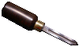
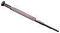

 He started playing the clarinet at the age of 9, and soon went on to learn to play the saxophone, as well as trying other wind instruments. Alongside the playing interest, was a fascination in the mechanics and the acoustic properties of the instruments.
 Rob went on to achieve an engineering degree in the early 80’s and has since gained over twenty years' experience working in the design and development sector of the aerospace industry. Wanting to further pursue his interest in musical instrument repair, he studied woodwind repair at Merton College between 2004 and 2006 to gain an ‘ASET’ certificate in musical instrument technology, and also trained in Brass instrument repair at the Llangunllo school, under Trevor Head.